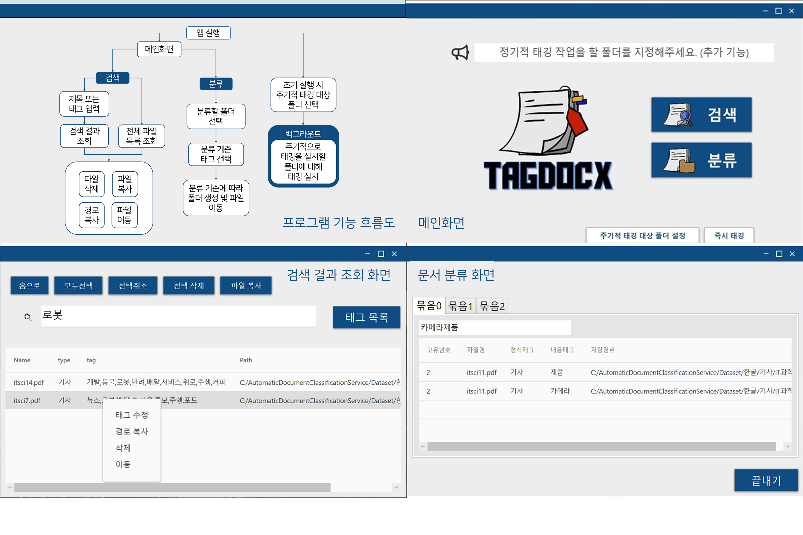
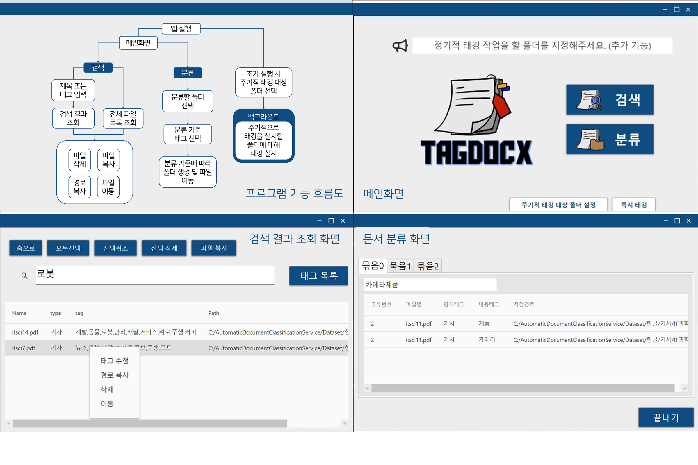
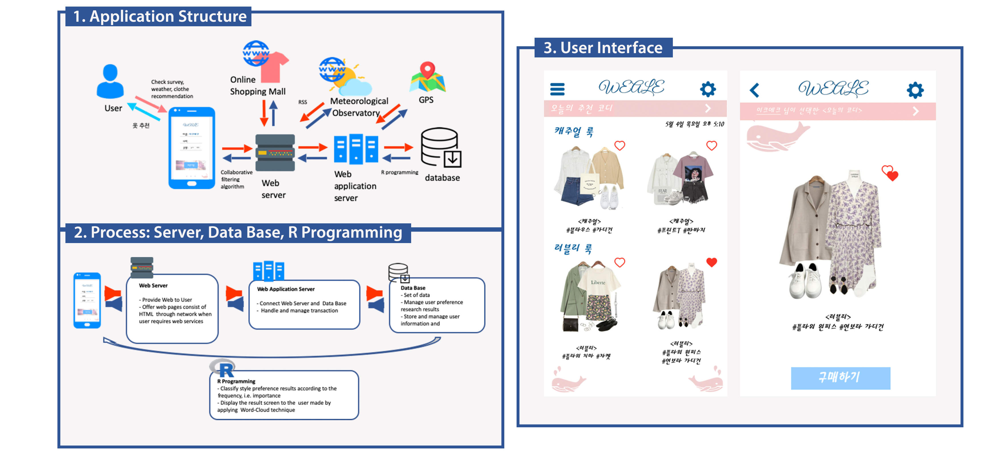
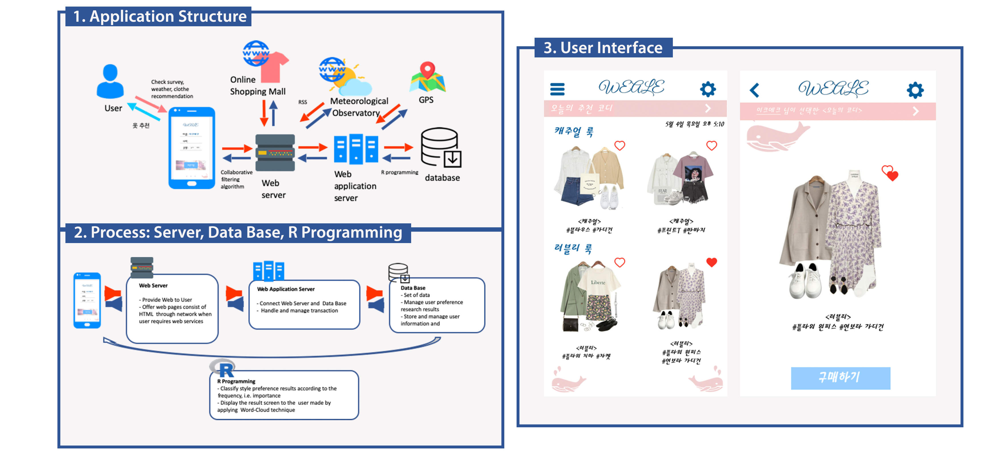

About me
I am a Human-Computer Interaction (HCI) researcher with a focus on designing inclusive and privacy-preserving systems. I am currently pursuing my PhD at the University of Illinois Urbana-Champaign, where I work with Professor Camille Cobb in the Computer Science Department and Professor Adam Bates at the Secure & Transparent Systems Lab. With experience in UX design, social computing, and identity-driven research, I create technologies that empower diverse user groups while prioritizing privacy and security. For more details, see my CV.
My Portfolio
 


 


Recent News & Projects
-
Poster Presentation at SPLICE 2024 All-hands Meeting
Date: November 18-20, 2024
Location: Baltimore, MD, United States
I presented a poster on a user study of Fitness Privacy at the Security and Privacy in the Lifecycle of IoT for Consumer Environments (SPLICE) 2024 All-hands meeting.
-
Poster Presentation at IEEE S&P 2023: A User Study on Two-Factor Authentication
Date: May 22-24, 2023
Location: San Francisco, CA, United States
I presented a poster on a user study of two-factor authentication (2FA) at the IEEE Symposium on Security and Privacy (S&P) 2023.
-
Student Volunteer at ACM CHI 2023
Date: April 23-28, 2022
Location: Hamburg, Germany
I volunteered as a student at the ACM Conference on Human Factors in Computing Systems (CHI).
-
Student Volunteer at ACM CHI 2022
Date: April 30, 2022 - May 6, 2022
Location: Online
I volunteered as an online student at the ACM Conference on Human Factors in Computing Systems (CHI), contributing remotely to the event.
-
Publication X
Published a paper on [topic] in [journal/conference].
-
Workshop Y
Conducted a workshop on [subject].
Publications
Poster:“I Have Nothing to Protect”: Understanding the Factors of Adoption of 2FA in Social Media.
Yeeun Jo, Margie Ruffin, Mahnoor Jameel, and Camille Cobb
44th IEEE Symposium on Security and Privacy (Oakland'23). San Francisco, CA, USA. May 22, 2023.
Analysis of Technical Factors in Interactive Media Arts, with a Focus on Prix Ars Electronica Award Winners.
Yeeun Jo and Uran Oh.
Intelligent Computing. SAI 2022. Lecture Notes in Networks and Systems, vol 506. Springer, Cham. July, 2022.
Stealth UAV through Coandă Effect.
Dongyoon Shin, Hyeji Kim, Jihyuk Gong, Uijeong Jeong, Yeeun Jo, and Eric Matson.
2020 Fourth IEEE International Conference on Robotic Computing (IRC), Taichung, Taiwan, 2020.
Automatic Document Classification System using Natural Language Processing and Deep Learning.
Yeeun Jo, Yoojin Jung, Yujin Park, Sojeong Chang.
Proceeding Korea Computer Congress 2020. Seoul, Republic of Korea. July, 2020.